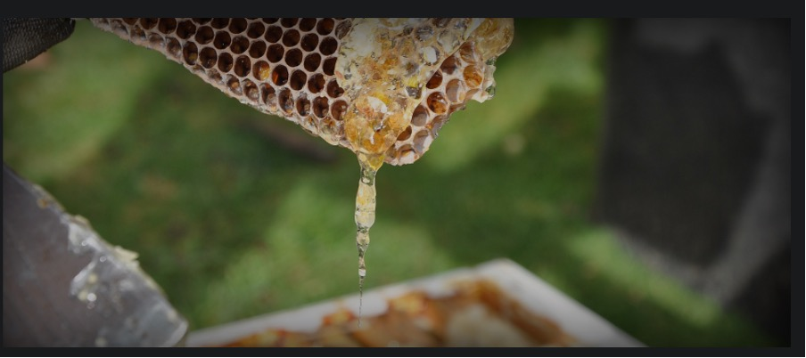

The Agricultural and Processed Food Products Export Development Authority (APEDA) has been coordinating with producers and state governments to guarantee a reliable supply network of honey for export purposes to Europe and other nations. M Angamuthu, Chairman of APEDA stated that "We are working closely with state governments, producers, and other participants in the supply chain to increase exports to other countries and regions such as the European Union, United Kingdom, and South-East Asia". He also stated that India is renegotiating the duty structure levied by several nations to increase honey exports. In 2020-21, India exported 59,999 tonnes of natural honey valued at 716 crores ($96.77 million), with the United States accounting for 44,881 tones (74.8 percent). Other popular regions include Bangladesh, Saudi Arabia, UAE, and Canada. Although India's honey exports began in 1996-97, the country was ranked ninth in worldwide trade in 2020, with 7.36 lakh tons (lt) exported, according to APEDA. India is also ranked seventh in the world in terms of honey production. China, Turkey, Canada, Argentina, Iran, and the United States are significant honey producers, accounting for half of the global production, which is estimated to be 17.21 lt in 2019. Angamuthu stated that APEDA has assisted honey producers in reaching export markets, in addition to providing government help through various programs, quality certification, as well as lab testing. On a priority basis, the export promotion agency is now also addressing concerns such as rising freight prices, restricted availability of containers during peak honey export season, higher nuclear magnetic resonance test expenses, and insufficient export incentives, he stressed. Honey export has enormous potential as a result of its popularity as an efficient immune booster and a healthy substitute to sugar, according to APEDA. Consumption has increased significantly, especially after the Covid outbreak.
